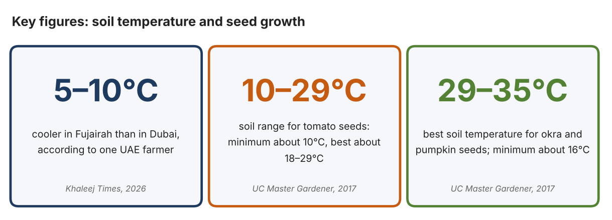
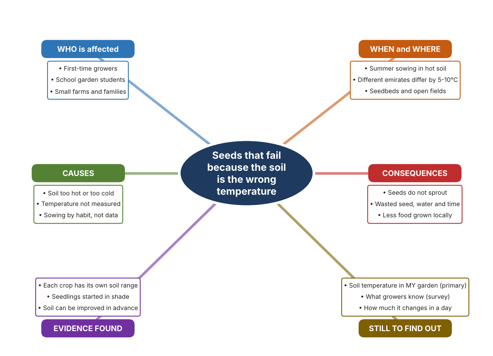
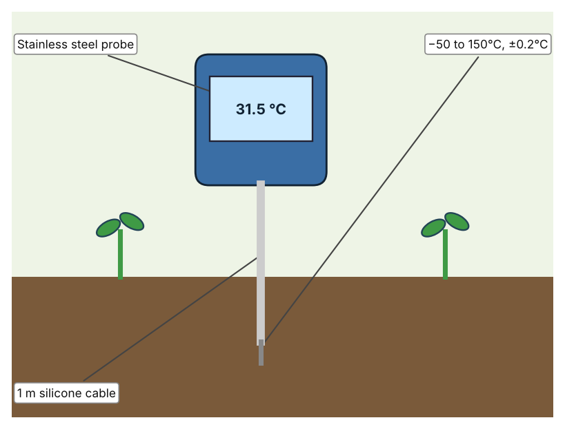
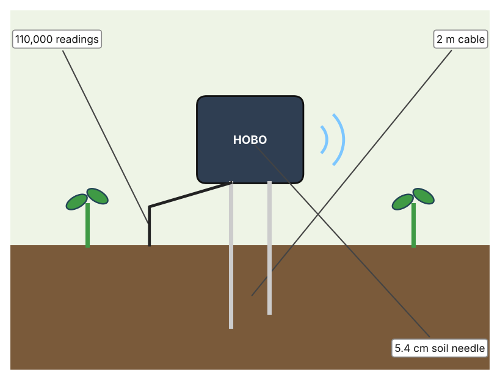
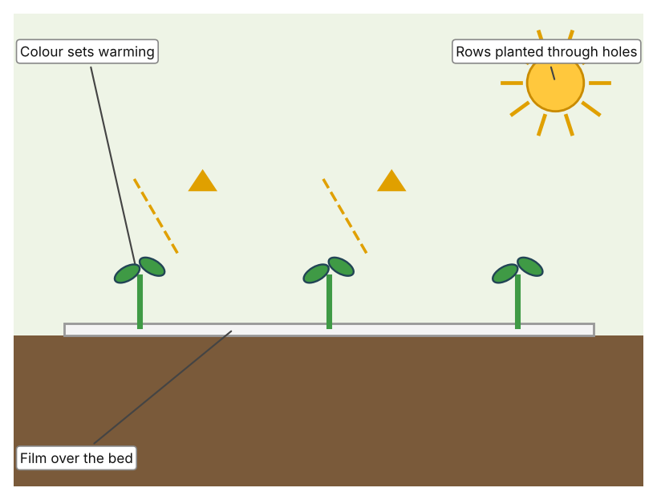

A1 · Design need
Identify and explain the problem faced by your client and community.
My client is the Eco Club of a Dubai school, represented by its teacher adviser. The club runs a small vegetable garden and wants its students and their families to grow food successfully. It needs seeds to be sown when the soil temperature suits them, so that less seed, water and time are wasted.
The people most affected are first-time growers and the students who sow the seeds, because they may not know how warm the soil should be. Families who grow food at home are a second group. Small farms are a third group, because a failed sowing costs them a whole growing period.
The need is real because every crop has a soil temperature range in which seeds sprout. UC Master Gardener data show that tomato seed needs soil of at least 50°F (10°C) and does best between 65 and 85°F (18 to 29°C), while okra and pumpkin need at least 60°F (16°C) and do best between 85 and 95°F (29 to 35°C) (Pothour). A UAE farmer advised first-time growers to expose the soil to the sun in summer, to start seedlings in shade, and noted that Fujairah can be 5 to 10°C cooler than Dubai (Al Qaydi). The first source describes California and was last updated in 2017, and the second is one farmer's advice, so I need to find out about my own garden.
Figure 1 summarises the key numbers. The ranges come from California, so I treat them as a pattern and not as proof about UAE soil. In my own words: a seed that is sown into soil outside its range may never sprout, and that wastes the whole effort. Figure 2 is my mind map of the problem.
285 words


A2 · Research plan
Six research questions of different types, each with a priority, a research type and evidence.
| # | Question | Priority | Primary / secondary | Evidence | Brief answer |
|---|---|---|---|---|---|
| 1 | Factual: What soil temperature do different vegetable seeds need to sprout? | High | Secondary | UC Master Gardener, 2017 (Appendix A, Source 1) | Tomato 50 / 65–85 / 95°F, pepper 60 / 65–75 / 95°F, lettuce 32 / 60–75 / 85°F, okra and pumpkin 60 / 85–95 / 105°F (minimum / best / maximum). |
| 2 | Factual: What does a UAE farmer advise about soil and seedlings? | High | Secondary | Khaleej Times, 2 Sept. 2026 (Appendix A, Source 2) | Improve desert soil at least a month before planting, expose soil to sun in summer, start seedlings in shade, use drip irrigation, and expect Fujairah to be 5–10°C cooler than Dubai. |
| 3 | Conceptual: How can soil temperature be measured, and how can it be changed? | Medium | Secondary | Hanna page (Source 3); HOBO datasheet (Source 4); Hailey, 2023 (Source 5) | A probe thermometer gives one reading; a logger records many; plastic film can warm soil by up to 20°F (about 11°C) or cool it by 10°F (about 5.5°C) depending on colour. |
| 4 | Debatable: Should growers measure soil temperature themselves, rely on a calendar, or change the soil with mulch? | Medium | Secondary | Appendix A, Sources 1 to 5 | A calendar is free but ignores local differences; a probe reads one spot; a logger shows change over time; mulch helps but black film may cause heat stress in hot climates. My view: measuring first makes the other choices smarter. |
| 5 | Debatable (challenges my assumption, UAE source): In a hot country soil is always warm enough, so UAE growers do not need to measure it. | High | Secondary | Khaleej Times, 2026 (Source 2); UC Master Gardener (Source 1) | The farmer says soil must be prepared and seedlings started in shade, and the UAE varies by 5–10°C between emirates, so heat can be a problem as much as cold. Whether my garden is too hot is something only my own data can show. |
| 6 | Factual (primary): What are the soil temperatures in our school garden at different times and places, and what do growers know? | High | Primary | Own soil readings and survey (Appendix A, Sources 6 and 7) | [Student data needed: write the readings (time, place, °C) and survey averages, then two sentences on the pattern you see.] |
A3 · Existing products
Three significantly different products, each analysed with ACCESS FM, with pros and cons.
Product 1: Pocket probe thermometer (Hanna HI98509 Checktemp 1)

Illustration by the author based on the Hanna HI98509 listing, Tester (Appendix A, Source 3). [Student: replace with a photo from the source, cited MLA 9]
Product 2: Soil moisture and temperature logger (HOBO MX2307)

Illustration by the author based on the HOBO MX2307 datasheet, RS Hydro (Appendix A, Source 4). [Student: replace with a photo from the source, cited MLA 9]
Product 3: Plastic mulch film

Illustration by the author based on Hailey, Epic Gardening (Appendix A, Source 5). [Student: replace with a photo from the source, cited MLA 9]
ACCESS FM analysis
| ACCESS FM | Product 1 | Product 2 | Product 3 |
|---|---|---|---|
| Aesthetics | Handheld meter with a long probe; look not described. | Small logger with a soil needle; look not described. | Plastic sheet in black, clear or silver (Hailey). |
| Cost | £80.50 excluding VAT, £96.60 including (Tester). | Price not stated. | Price not stated. |
| Customer | Growers who need a quick single reading. | Growers who want readings over time. | Home and small-farm growers. |
| Environment | Not stated. | Bluetooth reading within 30.5 m; battery about two years with Bluetooth on, five off. | Microplastic pollution is a concern; black film can cause heat stress in hot climates (Hailey). |
| Size | 107 × 59 × 17 mm, 130 g. | Needle 5.4 cm; cable 2 m; other size not stated. | Roll sizes not stated. |
| Safety | IP65; three AAA batteries last about three years. | Stores 110,000 measurements. | Safety is not discussed. |
| Function | Measures temperature at one spot when the probe is pushed in. | Logs soil temperature and moisture automatically. | Warms soil by up to 20°F or cools it by 10°F, depending on colour. |
| Materials | Stainless steel probe, silicone cable. | Materials are not stated. | Plastic film. |
Pros and cons
| Product 1 | Product 2 | Product 3 | |
|---|---|---|---|
| Pro | Quick, cheap compared with a logger and easy to understand. | Records change over a whole day and gives moisture as well. | Changes the soil temperature itself, not just measures it. |
| Con | One reading at a time; someone must be there to take it. | Price is not stated and it needs a Bluetooth device to read. | May overheat soil in hot weather and adds plastic waste. |
A4 · Design brief
Restate the need, summarise the research and the existing products, and state the design intent.
My client, the Eco Club of a Dubai school, needs seeds to be sown when the soil temperature suits them, so that less seed, water and time are wasted. The problem is real: tomato seed needs soil of at least 10°C and does best between 18 and 29°C, while okra and pumpkin do best at 29 to 35°C (Appendix A, Source 1). A UAE farmer advises starting seedlings in shade and notes that temperatures can differ by 5 to 10°C between emirates (Appendix A, Source 2).
My research shows that each crop has its own soil range and that heat can be a problem as well as cold (Appendix A, Sources 1 and 2). The ranges come from California and the farmer's advice is one person's view, so I need my own evidence. My debatable questions led me to decide that a calendar, a single reading and mulch each answer only part of the problem, and my challenged assumption (that soil in a hot country is always warm enough) showed me that the risk can be too much heat. I will gather my own evidence with soil readings and a survey, always with permission (Appendix A, Sources 6 and 7).
I analysed three very different existing solutions. A pocket probe thermometer gives an accurate reading in seconds, but it shows only one spot at one moment (Appendix A, Source 3). A soil logger records temperature and moisture automatically for long periods, but its price is not stated (Appendix A, Source 4). Plastic mulch can warm or cool soil by changing its colour, but black film can overheat soil in hot climates and adds plastic waste (Appendix A, Source 5). They give me three ideas for inspiration: reading once, recording over time, and changing the soil itself. Each has a weakness that another covers.
My design intent is therefore to create a solution that shows growers the soil temperature clearly, so that they can decide when to sow. It must be affordable, easy for students to read, durable in hot sun and wet soil, and accurate enough to compare with seed ranges. I have deliberately not fixed what form it will take. That decision will be made in Criterion B, after I analyse my own readings and survey against the evidence in Appendix A.
383 words
Appendix A · Research notes and sources
Secondary sources in MLA 9, with notes and where each source is used.
| # | Source (MLA 9) | Key notes | Used in |
|---|---|---|---|
| 1 | Pothour, Gail. “Soil Temperature Conditions for Vegetable Seed Germination.” UC Master Gardener Program, UC ANR, updated Aug. 2017, ucanr.edu/program/uc-master-gardener-program/seed-germination-temperature-and-timing. Accessed 21 Oct. 2026. | Minimum / best / maximum soil temperature in °F for each vegetable; a California source, last updated 2017. | A1; A2 Q1, Q4 and Q5; A4. |
| 2 | Al Qaydi, Ruqayya. “UAE Farmer Shares Advice for First-Time Growers, How to Prepare for Winter.” Khaleej Times, 2 Sept. 2026, www.khaleejtimes.com/uae/uae-farmer-advice-first-time-winter-preparation-crops. Accessed 21 Oct. 2026. | Improve soil at least a month before planting; expose soil to sun in summer; start seedlings in shade; Fujairah 5–10°C cooler than Dubai; drip irrigation; check for leaks. One farmer's advice. | A1; A2 Q2 and Q5; A4. |
| 3 | “Hanna Instruments HI-98509 Checktemp1 Pocket Thermometer.” Tester, tester.co.uk/hanna-instruments-hi-98509-checktemp1-pocket-thermometer. Accessed 21 Oct. 2026. | −50 to +150°C; 0.1°C resolution; ±0.2°C from −30 to 120°C; stainless steel probe on 1 m silicone cable; IP65; 3 × AAA, about 3 years; 107 × 59 × 17 mm; 130 g; £80.50 ex VAT. | A2 Q3 and Q4; A3 Product 1; A4. |
| 4 | “HOBO MX Soil Moisture and Temperature Data Logger.” RS Hydro, www.rshydro.co.uk/professional-weather-stations/soil-moisture-sensor/mx230x/. Accessed 21 Oct. 2026. | MX2307: temperature −40 to 100°C, ±0.2°C (0–70°C), 0.04°C resolution; soil moisture ±0.031 m³/m³ typical; 110,000 measurements; battery about 2 years (Bluetooth on), 5 years (off); 30.5 m Bluetooth; 2 m cable; 5.4 cm needle; price not stated. | A2 Q3 and Q4; A3 Product 2; A4. |
| 5 | Hailey, Logan. “18 Pros and Cons of Using Plastic Mulch in the Garden.” Epic Gardening, 19 Sept. 2023, www.epicgardening.com/plastic-mulch-pros-and-cons/. Accessed 21 Oct. 2026. | Films can warm soil by up to 20°F or cool it by 10°F depending on colour; black film may cause heat stress in hot climates; microplastic concern. A gardening blog, not a study; no brand or price. | A2 Q3 and Q4; A3 Product 3; A4. |
| 6 | Primary: soil temperature readings, completed by the student on [date]. Accessed own data. | [Student: summarise your counts.] | A2 primary question; A4. |
| 7 | Primary: survey of [number] people, completed on [date]. | [Student: summarise your averages.] | A2 primary question; A4. |
Primary research instrument 1: soil temperature readings
Student measures soil only in the school garden with the teacher present, using a thermometer provided by the school.
| Place in garden | Time | Sun or shade | Depth (cm) | Soil temp (°C) | Notes |
|---|---|---|---|---|---|
| Bed 1 | |||||
| Bed 2 | |||||
| Shaded corner | |||||
| Open ground |
Primary research instrument 2: survey
Rate each statement from 1 (strongly disagree) to 5 (strongly agree). Collect responses with permission and record no names.
| Statement | 1 | 2 | 3 | 4 | 5 | Total responses |
|---|---|---|---|---|---|---|
| I know what soil temperature my seeds need. | ||||||
| I check the soil temperature before sowing. | ||||||
| Some of my seeds have failed to sprout. | ||||||
| I would use a soil temperature reading to choose when to sow. |